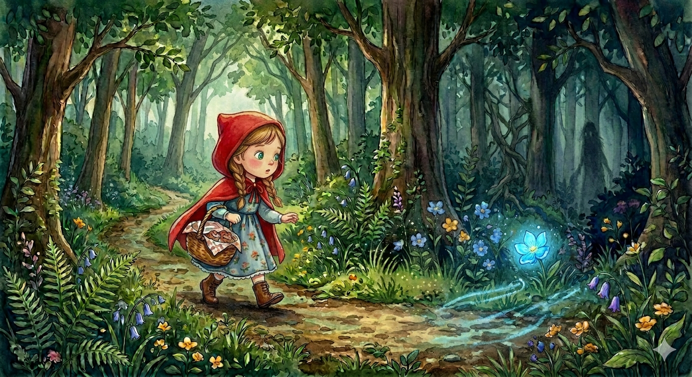

2
La fleur bleue éclatante
Tu marches sur le sentier en toute sécurité, écoutant le chant des oiseaux et humant le délicieux parfum des bonbons.
Soudain, un craquement de branches résonne à tes côtés, et une silhouette fugace traverse la lumière du soleil.
Quelque chose, ou quelqu'un, a laissé tomber une fleur bleue éclatante juste au bord du chemin sombre. Ton cœur s'emballe de curiosité.
A) Tu ignores la fleur, tu accélères le pas sur le sentier et tu te concentres pour arriver vite chez grand-mère. (Rendez-vous à 4)
B) Tu fais un petit pas hors du sentier juste pour ramasser la mystérieuse fleur bleue. (Rendez-vous à 5)